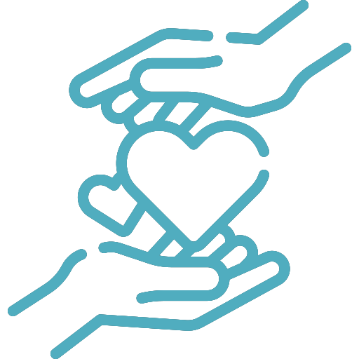

Nossa Personalidade
Passe o mouse em cima para verificar


É uma jovem de 18 anos amaldiçõada pela Bruxa das Terras Abandonadas, e ganha uma aparência que condiz com a idade de sua alma.
Ela se torna uma velha de 90 anos por não ter alegria ao viver.
Devido ao seu amor por Howl, a aparência geriátrica de Sophie diminui dependendo de seu estado emocional.
Ao defender Howl para Suliman, Sophie recupera brevemente sua aparência original.
Passe o mouse em cima para verificar
Developed by Mariana Namie